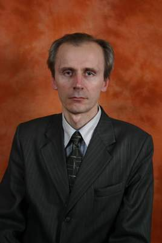

|  | Кудрик Тарас Степанович доцент, кандидат фізико-математичних наук e-mail: kudryk@mail.lviv.ua |
Навчався у СШ №65 м. Львова, а в старших класах – у математичному класі СШ №11, де серед інших вчителів у той час працював математик Михайло Львович Крайзман. Потім – на механіко-математичному факультеті Львівського університету. Тут найбільший вплив на мене мав професор Владислав Елійович Лянце (1920-2007), завдяки якому я ознайомився з нестандартними методами аналізу. У 1984-87рр. під його керівництвом навчався в аспірантурі, а у 1989р. захистив кандидатську дисертацію на тему «Спектральний аналіз нестандартних різницевих операторів та його застосування» (у Донецькому Інституті прикладної математики і механіки). З 1990р працював на посаді асистента, а згодом (2002) доцента кафедри математичного та функціонального аналізу. Публікації присвячені застосуванню нестандартних методів до математичного та функціонального аналізу, основам математики. Брав участь у декількох міжнародних конференціях. У 2000-2001 р проходив стажування в університеті Авейру, Португалія. |
|
Рекомендована література до вивчення основних курсівФотоАвейру, Португалія (2004) Единбург, Шотландія (1996)
|
|